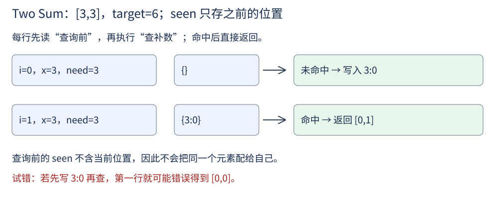
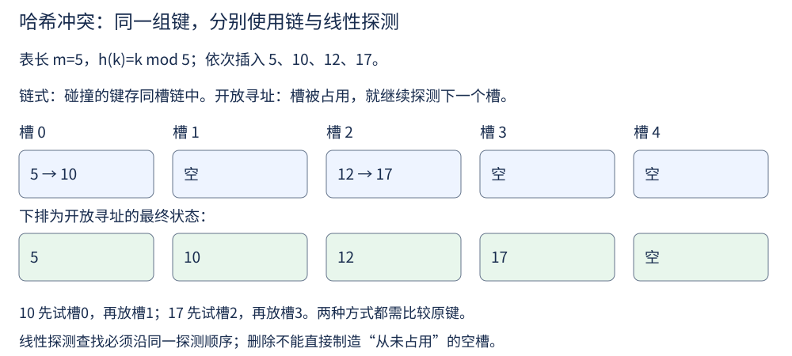

第 3 讲 · 哈希表¶
阅读起点：第 2 讲：数组槽位与摊销；本讲再引入期望。
首读范围：先用字典写 Two Sum，再看冲突小例子，再选读随机哈希函数族。
第 2 讲用下标读取数组元素，但很多查询给出的并不是下标。例如学生名单按录入顺序保存时，已知学号、想查姓名，就不能直接知道该读第几格；逐条核对学号需要 \(\mathcal{O}(n)\) 时间。我们希望建立“学号到姓名”的对应关系，直接按学号查询。
键、值、集合先分清。 字典 {学号: 姓名} 的键是查询时提供的标识，值是找到后返回的资料。对同一个键再次赋值，会更新它的值。集合只记录一个值在不在，适合“这个学号是否已经出现过”这种不需要取出附加资料的问题。下面先学会调用它们，再解释内部如何实现。
先熟悉 Python 的字典与集合接口：
students = {20210001: '小林'}
students[20210002] = '小周'
print(students[20210001]) # 小林
print(20210003 in students) # False：查键，不是查姓名
seen = {3, 8}
seen.add(5)
print(5 in seen) # True
空集合要写 set()，{} 是空字典。seen.remove(3) 删除集合里的 3（要求它已存在）。字典的 students.get(学号, 默认值) 在键不存在时返回默认值，已有键则返回对应资料；这让后面的计数可以从 0 起步。
用字典解决“两数之和”¶
回到第 1 讲的 Two Sum：输入整数数组 nums 和目标值 target，返回两个不同下标，使对应数值之和等于 target。例如 [2,7,11,15]、target=9 返回 [0,1]，而不是返回数值 [2,7]。有多组时返回任意一组；本函数约定无解时返回 []。
暴力枚举的是所有不同的下标对：先试下标 0 与 1、2、3，再试下标 1 与 2、3，最后试 2 与 3；每次检查两个数的和。长度为 n 时，最多检查 \(n(n-1)/2\) 对。
为了减少这些检查，换成从左往右扫描。扫描到当前值 x 时，另一个数必须是 \(\mathrm{target}-x\)，我们把它叫作补数。例如扫描到 7 时，目标是 9，就只需要知道前面有没有 2，无须再与前面的每个值分别相加。
因此用字典 seen 保存“之前出现的数值 → 它的下标”。键用来判断补数是否存在，值用来构造题目要求的下标答案：
| 当前下标 i / 值 x | 查询前的 seen | 要找的补数 | 本轮操作 |
|---|---|---|---|
| 0 / 2 | {} |
7 | 尚未找到，记下 seen[2]=0 |
| 1 / 7 | {2:0} |
2 | 找到下标 0，返回 [0,1] |
若存在可行的一对，扫描到较右位置时，左侧所需的值已经记在 seen 中；即使有重复值，字典中保留的也仍是一个可用的先前下标，因此能找到一组合法答案。seen 只存之前的元素，正好保证不能重复使用同一个位置。下面再用两个相等数检查这一点。

以 [3,3]、target=6 为例：第一次查 3 未命中，再写 3:0；第二次查 3 命中下标 0，返回 [0,1]。若先写后查，第一次就可能错误返回 [0,0]。
enumerate(nums) 逐次产生“下标与数值”这一对。Python 用元组 (i,x) 把一对值装在一起，读 pair[0]、pair[1] 可分别取出两项，写 i,x=pair 则把两项分别赋给两个变量，这叫解包。因此 for i,x in enumerate(nums) 就是每轮接住这一对；例如 nums=[2,7] 时，依次得到 i=0、x=2 和 i=1、x=7。元组中的各项不能像列表那样逐项改写，但可以读取和解包。
def two_sum(nums, target):
seen = {} # 值 -> 下标
for i, x in enumerate(nums):
need = target - x
if need in seen: # 先查
return [seen[need], i]
seen[x] = i # 后写
return []
这里 seen={} 创建的是字典，用来保存数值和下标；若只想判断某个值出现过没有，可以像开头那样用集合。enumerate(nums) 依次给出下标 i 和数值 x；need in seen 检查键是否存在，seen[need] 取出对应下标。先按“单次字典查询或写入的平均成本为常数”估算：每轮固定几次字典操作，整段扫描的时间期望为 \(\mathcal{O}(n)\)，最多保存 n 个键，空间为 \(\mathcal{O}(n)\)。这里的期望是平均保证，不保证每次操作都很快；下面会说明这个平均依赖什么条件。
字典内部怎样按键定位¶
刚才只用了字典的接口。Python 字典通过哈希表组织键，下面从一个更简单的数组方案开始，逐步理解为什么需要哈希表。
要在 100 万条记录里反复查询"学号是 20210001 的学生叫什么"，我们希望查找、插入、删除都接近 \(\mathcal{O}(1)\)。
最直接的方案是直接访问数组：把键当数组下标。
class DirectAccessArray:
def __init__(self, universe):
self.A = [None] * universe
def find(self, k): return self.A[k]
def insert(self, k, v): self.A[k] = v
def delete(self, k): self.A[k] = None
三个操作全是 \(\mathcal{O}(1)\)，很理想。但它有两个毛病：键必须是非负整数且不能太大；而且空间的规模等于键的取值范围。如果键是 9 位学号，就要开十亿个格子，哪怕只存 100 个学生。
把大键压到小范围里¶
既然是"键太大放不下"，那就用一个函数把大键压缩到一个小范围：
m 是表的槽位数，mod 表示取余，对应 Python 的 %。压缩必然会撞车——m = 10 时 17 和 27 都落到 7。冲突处理解决“挤在同一个槽里怎么办”；分布假设与扩缩容解决“会不会挤得太厉害”。三者要一起考虑。
不同键可以同槽，但“哈希位置相同”不表示“键相同”，查找时仍须比较原键。
最自然的处理方式是"撞了就排队"：每个槽位挂一条链，所有映射到该槽位的键都挂在同一条链上。这就是链式哈希。
设表长 m、元素数 n，装载因子 \(\alpha =n/m\) 是每个槽平均分到的元素数。它不是每条链长度的上限：4 个元素、4 个槽也可能全挤在同一个槽。
例如 n=4、m=8，平均每槽只有 0.5 个键，但仍可能有某一槽装 4 个。“平均分配量小”本身不能排除拥挤，还需要哈希分布的保证。
先看查询实际做什么：算出槽位，随后逐个比较该槽中的键。沿用 m=10、h(k)=k mod 10，例如槽 7 存着 [(17,"甲"),(27,"乙")]，查 27 就先跳过 17，再返回“乙”；查 37 则要看完整个槽才知道不存在。下面用列表保存每个槽中的记录，变量 chain 指的就是这份列表，尚不需要手写第 4 讲的链表。
查询成本因此等于“定位槽位的固定开销 + 检查该槽的记录数”。若不同键的碰撞概率至多 \(1/m\)，一次查询的期望代价是 \(\mathcal{O}(1+\alpha )\)。这里的期望来自随机哈希函数的选择，不保证每次查询都快。代码的 insert 先查重再写入，因此也要扫描链；扩容还需重新分配全部键。维持 \(m=\Theta (n)\) 时，查询期望 \(\mathcal{O}(1)\)，连续插入可做到期望摊销 \(\mathcal{O}(1)\)，单次最坏仍可为 \(\mathcal{O}(n)\)。
下面建表时用普通循环，每轮 append([]) 都新建一条独立的空链。_ 只是一个合法变量名，表示这轮不需要使用它的值。Python 内建的 hash(key) 把可哈希的键（如整数、字符串）变成整数，再对 m 取余得到槽位；它不是前文漏写的函数。
class ChainedHashTable:
def __init__(self, m=8):
self.m, self.n = m, 0
self.table = []
for _ in range(m):
self.table.append([])
def _hash(self, key):
return hash(key) % self.m
def insert(self, key, value):
chain = self.table[self._hash(key)]
for pair in chain:
if pair[0] == key:
pair[1] = value
return
chain.append([key, value])
self.n += 1
if self.n > 2 * self.m: # 装载因子超过 2 就扩容
self._resize(self.m * 2)
def find(self, key):
for pair in self.table[self._hash(key)]:
if pair[0] == key:
return pair[1]
return None
def _resize(self, new_m):
old = []
for chain in self.table:
for pair in chain:
old.append(pair)
self.m, self.n = new_m, 0
self.table = []
for _ in range(new_m):
self.table.append([])
for key, value in old:
self.insert(key, value) # 容量变了，必须重新哈希
后续会遇到同一建表过程的简写：table=[[] for _ in range(m)]，叫作列表推导式。方括号中的 for 仍按顺序循环，每轮把前面的表达式 [] 算一次并收进结果，所以每条链仍是独立列表。它与上面的循环含义相同。若写成 [[]] * m，却会重复引用同一条链，修改一个槽会影响其他槽。
这份教学实现用 None 表示“没找到”，因此约定不存值为 None 的记录，构造时 m 必须为正。hash(key) % m 用来演示分桶流程，本身不保证对任意输入均匀分布。
“期望”不是每次保证。 若掷公平骰子，长期平均点数为 \((1+2+3+4+5+6)/6=3.5\)，但没有哪次真掷出3.5。哈希表的期望分析也在对可能的随机选择取加权平均；第2讲摊销则把一串操作的总成本平摊，不必掷骰子。这两种平均不能互换。
选读：怎样保证期望查找成本¶
前面用到了“碰撞概率至多 1/m”。下面说明这项概率保证从哪里来，以及它能推出什么。
简单均匀哈希假设（SUHA）：每个键被独立、等概率地映射到 m 个槽位中的任意一个，与其他键无关。
先解释“不成功查询”：查一个不在表内的键 q，若它落到某条链，要逐个比较该链全部键。每个已有键与 q 同槽的概率为 \(1/m\)，加起来期望为 \(n/m=\alpha\)，再加定位槽的常数开销。
成功查询要区分两个量。独立均匀分桶时，一个随机已存键所在链的期望长度是 \(1+(n-1)/m\)，其中 1 是它自己。查找不会总走到链尾：若每个已存键等概率被查询，且链顺序与哈希结果无关，期望比较次数为 \(1+(n-1)/(2m)\)。不要把“链有多长”直接当成“找到它走了多远”。
现实中的确定性取模不自带随机保证。即使用素数 m，键 m,2m,3m 仍全撞在槽 0。取素数能缓解某些规律输入，不能证明最坏 \(\mathcal{O}(1)\)。全域哈希则是在输入固定、且输入不依赖所抽函数的前提下，随机抽函数，使任意不同键碰撞的概率不超过 \(1/m\)；这足够推出期望查询界。若攻击者可观察函数后自适应构造输入，需要另行分析。
第一次阅读可以先掌握 Python dict 的键值接口和 Two Sum，把随机函数族作为选读。
不用链表的另一种活法¶

链式哈希要额外维护链表。开放寻址换个思路：所有元素直接存在数组里，冲突了就往后找空位。
上面的伪代码只演示尚未发生删除时的插入或更新，假定至少有一个空槽；槽里存 (键,值)，所以用 [0] 比较键。若还要支持删除，下面就会遇到一个新问题。比如 m=5，键 5、10 都从槽 0 开始探测，分别占槽 0、1；删除 5 后若把槽 0 直接当成“从未用过”，查 10 就会在槽 0 提前停止。墓碑表示“这里删过元素，查找还要继续”，插入时又可复用。
它采用连续槽位，通常有利于局部访问；代价是需要墓碑、预留空位与及时扩容来维持探测过程。适合的阈值取决于探测策略；线性探测还会出现一长串相邻占用槽的“聚集”，不能用统一的 \(1/(1-\alpha )\) 公式估计所有查询。
空间上，链式哈希要 \(\Theta (n + m)\) 个格子（含指针），开放寻址只要 \(\Theta (m)\)，开放寻址通常省掉了逐节点指针，但实际内存还取决于预留容量和实现。
一个具体的小例子¶
m = 7，\(h(k)=k\bmod 7\)，依次插入 50, 700, 76, 85, 92, 73, 101：
| 键 | h(k) | 落到哪 |
|---|---|---|
| 50 | 1 | 槽 1 |
| 700 | 0 | 槽 0 |
| 76 | 6 | 槽 6 |
| 85 | 1 | 槽 1（冲突） |
| 92 | 1 | 槽 1（冲突） |
| 73 | 3 | 槽 3 |
| 101 | 3 | 槽 3（冲突） |
表的样子是 0:[700] 1:[50,85,92] 2:[] 3:[73,101] 4:[] 5:[] 6:[76]。此时 \(n = m = 7\)，\(\alpha = 1\)。查找 92 要走三步（50 → 85 → 92）——这说明 \(\alpha=1\) 也不表示每次查询只比较一次。
字符串的哈希函数怎么写¶
字符串不是一个可直接取余的整数，需要先把字符变成数。Python 的 ord(c) 返回单个字符的编码，例如 ord('a')=97、ord('b')=98。把所有字符编码相加可以作为哈希函数，但分布可能很差：
一种更能区分字符位置的做法是多项式哈希（也可用于滚动更新）：让每个字符参与运算，且位置影响权重。
p=131 是示例基数，不比所有 Unicode 字符编码都大。对 "ab"，结果在取模前是 ord('a')*131+ord('b')；换成 "ba" 权重不同。但取模后仍可能碰撞，必须保留原键并比较。字符串长度为 L 时，首次计算这类哈希需 \(\mathcal{O}(L)\)，不能把所有字符串操作当 \(\mathcal{O}(1)\)。示例用 Python 大整数计算，中间乘积也不保证装得进 64 位。
读懂后续代码的一种简写：sum(ord(c) for c in s) 与前面的循环累加相同，表示逐个取字符、算编码，再交给 sum 相加。表达式 for 变量 in 序列 放在这种括号里叫生成器表达式，它按需逐个给出结果，不先建完整列表。类似地，any(条件 for x in A) 逐项检查，遇到一个真就停止；[表达式 for x in A if 条件] 则只把符合条件的结果收进新列表。可以先写成普通循环理解，再使用这些简写。
从讲义走到代码¶
用用户 ID 查记录是按键查询，哈希表直接匹配这种需求。
先做 Two Sum，按“计算补数→查询→写入当前值”三步手写。对 [2,7,11,15]、目标 9，应返回 [0,1]；对 [3,3]、目标 6，应返回 [0,1]；只有 [3] 时应返回 []。
把每轮开始前的 seen 写在纸上。若它包含当前下标，就检查是否把写入放早了。再做本模块 Contains Duplicate，只需集合，无须保存下标。
练习¶
1. 掷一次骰子，把 n 个球全部放入对应桶。桶 1 中球数的期望、与球 1 同桶的球数期望（包含球 1）各是多少？
解答
前者是 n/6：只有骰子为 1 时有 n 个，否则为 0。后者是 n：无论骰子结果如何，所有球都跟球 1 在一起。这两个随机变量不同，不能对同桶事件套用独立假设。
2. 改成每个球独立、均匀选 m 个桶，重算这两个量。后者等于成功查找比较次数吗？
解答
分别为 \(n/m\) 与 \(1+(n-1)/m\)。第二个数是整条链的长度，查询未必要走完整条链；正文解释了均匀选择已存键时的期望查找位置。
3. 取模的 m 为素数就不会退化吗？
解答
仍会。m=7，键 7、14、21 都落到槽 0。选素数不是对任意输入的分布保证。
4. 为什么扩容时必须重新哈希所有元素，而不能直接把旧表的内容搬过去？
因为 \(h(k)=k\bmod m\) 依赖 m，m 改变后，键的目标槽位可能改变，必须逐键重算。例如键 10 在表长 5 时落槽 0，在表长 8 时落槽 2；键 1 则都落槽 1。
5. 手写 Two Sum：给定数组和目标值，返回两个数的下标，要求 \(\mathcal{O}(n)\)。
遮住上面的实现，从“遍历当前值→查补数→记录当前下标”三步重写，再用 [3,3] 与 [3] 检查是否重复使用同一位置。
"先查后写"是这套模板的要点。 如果先写再查，当 \(\mathrm{target} = 2x\) 且数组里只有一个 x 时，会把同一个元素配给自己，返回 [i, i]。